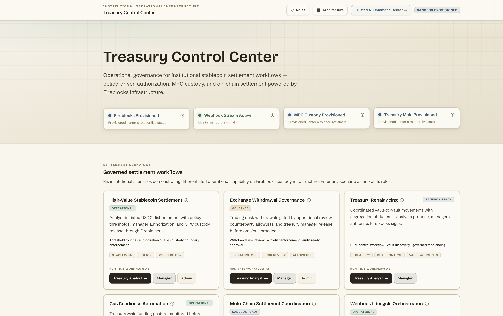

Institutional Workflow Blueprints
Treasury Control CenterInstitutional settlement governance with real segregation of duties.
Six governed settlement workflows: stablecoin payout, exchange withdrawal, treasury rebalancing, gas readiness, multi-chain coordination, and webhook lifecycle. Enter any scenario by role, where analysts initiate, managers authorize, and admins own policy. Settlements run against a live Fireblocks treasury vault with a policy-evaluation gate and a full audit trail.
Fireblocks API
@fireblocks/ts-sdk v19
createTransaction
vaultAccounts
getTransaction
getSupportedAssets
Custody primitives
Vault accounts
Transaction lifecycle
TAP (read-only snapshot)
MPC custody
Webhooks
Stack: Next.js 16 · React 19 · Supabase (Auth + Postgres) · Zustand · Tailwind · AI SDK
Open app →